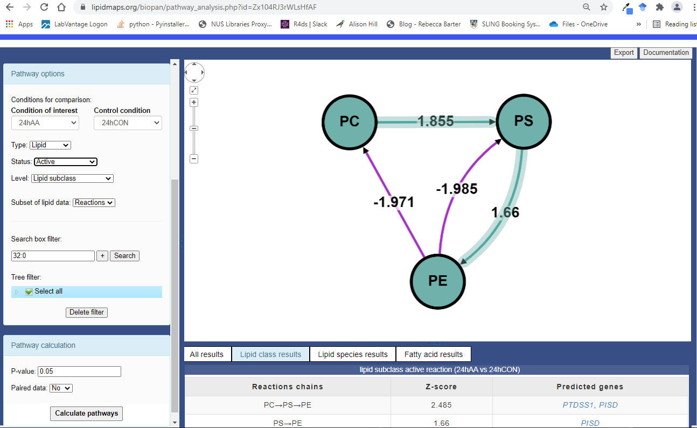
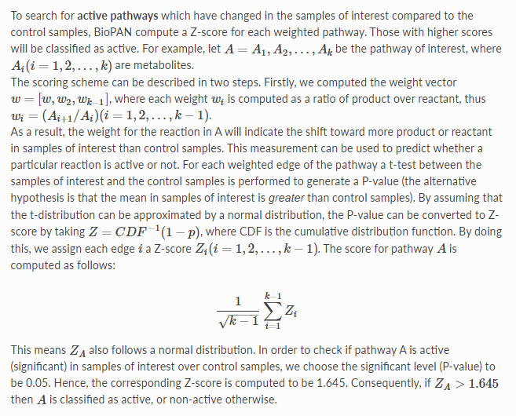
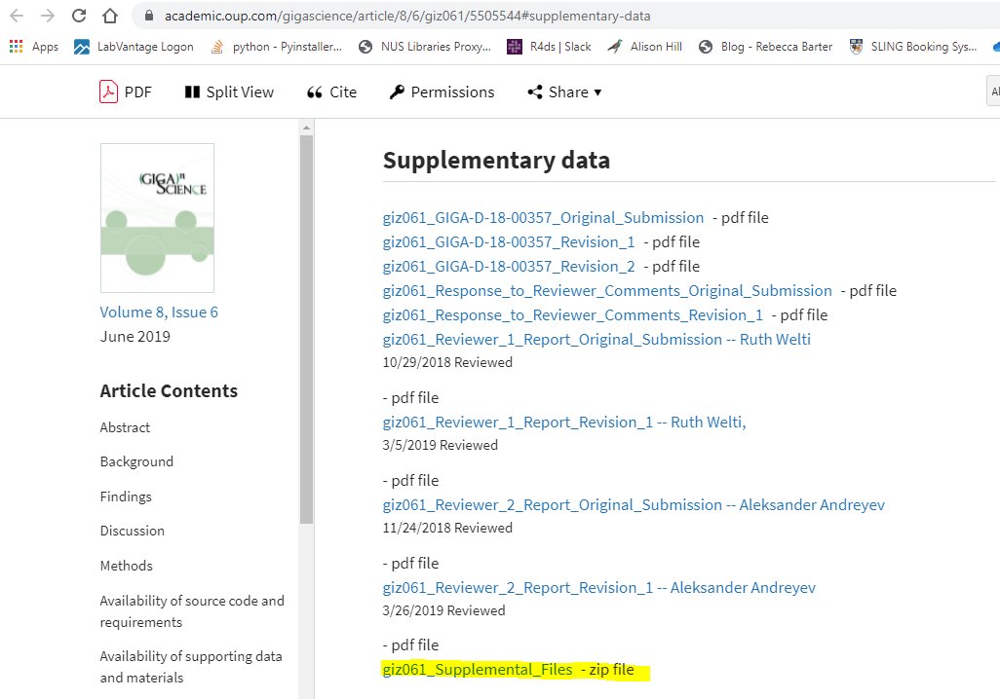
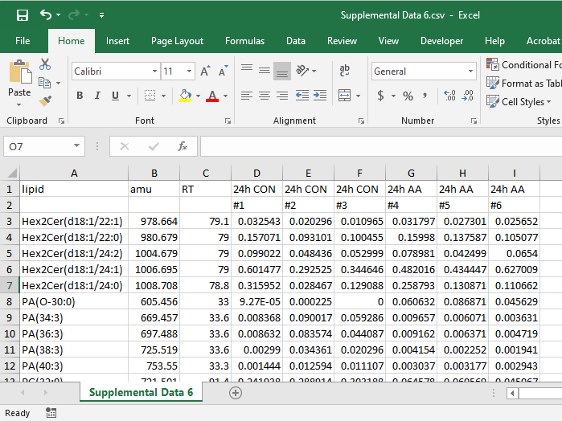
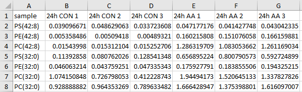
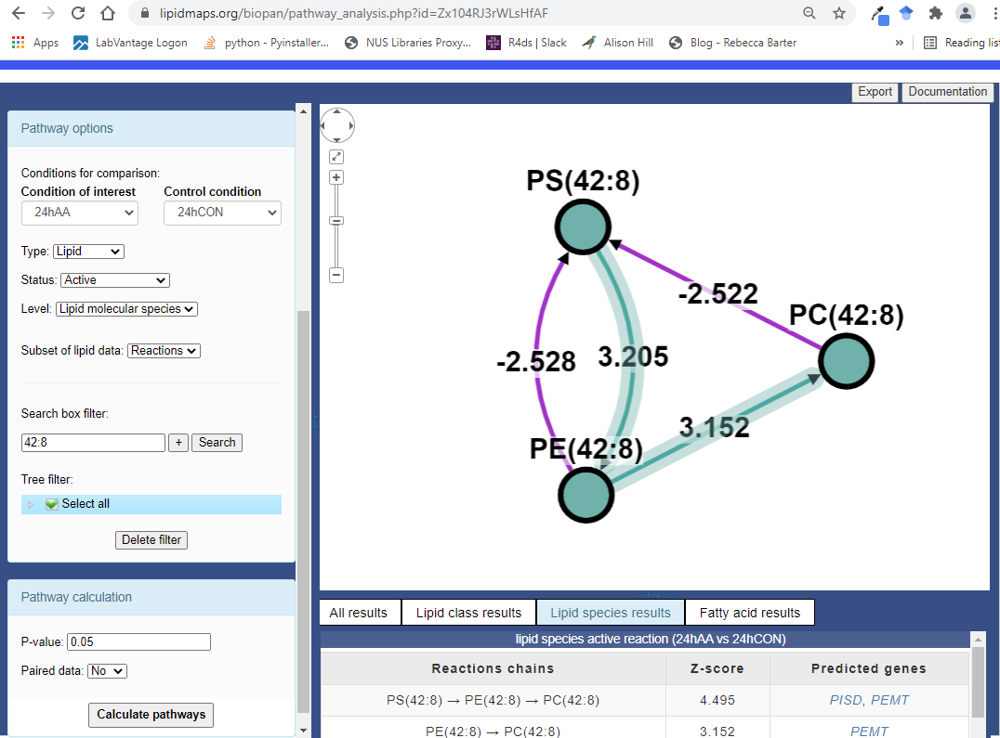
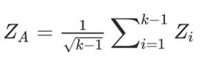
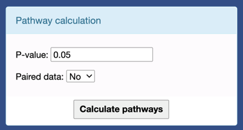
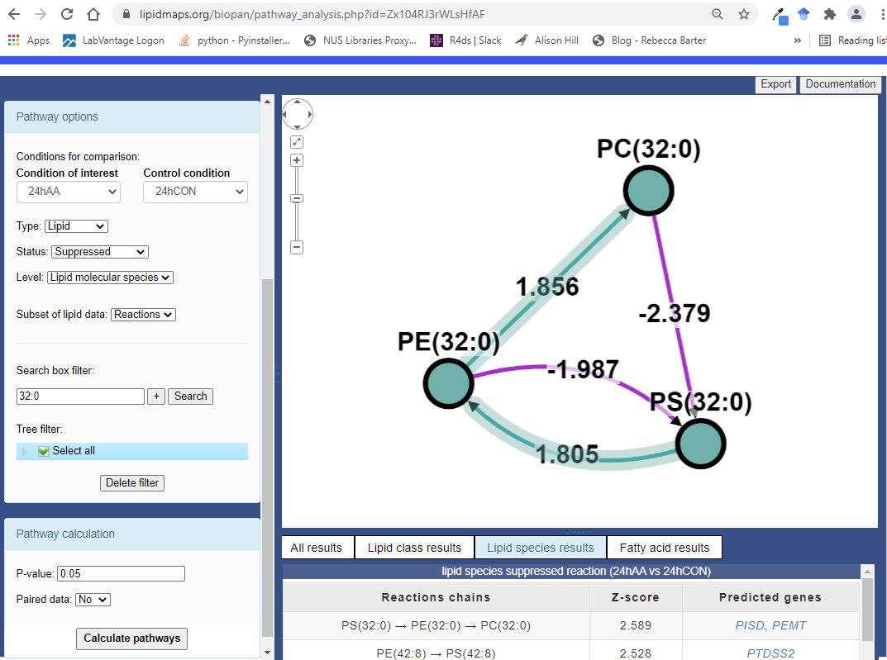

This document helps to explain how the number displayed in the BioPAN software are calculated using a small dataset as an example. The source code of this document can be found in this GitHub respository
BioPAN (1) is a tool found in LIPID MAPS designed to automate biosynthetic pathway analysis of lipids.

Below is a YouTube video on how to use BioPAN.
The documentation of BioPAN provides a technical explanation of how the pathway scores are calculated.

More information can be found in this paper (2)
library(dplyr)
library(magrittr)
library(report)
summary(report::report(sessionInfo()))The analysis was done using the R Statistical language (v4.0.5; R Core Team, 2021) on Windows 10 x64, using the packages dplyr (v1.0.6), rmarkdown (v2.7), report (v0.3.0) and magrittr (v2.0.1).
The data used in this tutorial is taken from this paper (3)
To download the data, scroll down to the “Supplementary data” Section and click on “giz061_Supplemental_Files”

Unzip the folder and go to Supplemental Data 6.csv
The data should look like this when opened

For this tutorial, a small subset is used

Let us consider the pathway of PS(42:8) to PE(42:8) to PC(42:8).

The dataset are as follows:
samples <- c(
"24h CON", "24h CON", "24h CON",
"24h AA", "24h AA", "24h AA"
)
group <- c(
"CON", "CON", "CON",
"AA", "AA", "AA"
)
PS42_8 <- c(
0.039096671, 0.048629063, 0.033723608,
0.047177176, 0.041427748, 0.043042335
)
PE42_8 <- c(
0.005358486, 0.00509418, 0.00489321,
0.160215808, 0.151076058, 0.166159881
)
PC42_8 <- c(
0.01543998, 0.015312104, 0.015252706,
1.286319709, 1.083053662, 1.261169034
)
active_data <- tibble::tibble(
Sample = samples,
Group = group,
`PS(42:8)` = PS42_8,
`PE(42:8)` = PE42_8,
`PC(42:8)` = PC42_8
)
active_data| Sample | Group | PS(42:8) | PE(42:8) | PC(42:8) |
|---|---|---|---|---|
| 24h CON | CON | 0.039 | 0.005 | 0.015 |
| 24h CON | CON | 0.049 | 0.005 | 0.015 |
| 24h CON | CON | 0.034 | 0.005 | 0.015 |
| 24h AA | AA | 0.047 | 0.160 | 1.286 |
| 24h AA | AA | 0.041 | 0.151 | 1.083 |
| 24h AA | AA | 0.043 | 0.166 | 1.261 |
PS(42:8) to PE(42:8)Compute the weight for product PE(42:8) over reactant PS(42:8) for each sample.
weights <- (active_data$`PE(42:8)` / active_data$`PS(42:8)`)
active_data <- active_data %>%
dplyr::mutate(`PE(42:8) over PS(42:8)` = weights)
active_data %>%
dplyr::select(-c(.data$`PC(42:8)`))| Sample | Group | PS(42:8) | PE(42:8) | PE(42:8) over PS(42:8) |
|---|---|---|---|---|
| 24h CON | CON | 0.039 | 0.005 | 0.137 |
| 24h CON | CON | 0.049 | 0.005 | 0.105 |
| 24h CON | CON | 0.034 | 0.005 | 0.145 |
| 24h AA | AA | 0.047 | 0.160 | 3.396 |
| 24h AA | AA | 0.041 | 0.151 | 3.647 |
| 24h AA | AA | 0.043 | 0.166 | 3.860 |
Compute a one-sided Welch \(t\)-test between the samples of interest (Group AA) and the control samples (Group CON).
aa_samples <- active_data %>%
dplyr::filter(.data$Group == "AA") %>%
dplyr::pull(.data$`PE(42:8) over PS(42:8)`)
control_samples <- active_data %>%
dplyr::filter(.data$Group == "CON") %>%
dplyr::pull(.data$`PE(42:8) over PS(42:8)`)
t1 <- t.test(aa_samples, control_samples, alternative = "greater")
report::report(t1)Effect sizes were labelled following Cohen’s (1988) recommendations.
The Welch Two Sample t-test testing the difference between aa_samples and control_samples (mean of x = 3.63, mean of y = 0.13) suggests that the effect is positive, statistically significant, and large (difference = 3.51, 95% CI [3.12, Inf], t(2.03) = 26.01, p < .001; Cohen’s d = 21.24, 95% CI [3.37, 39.33])
cat(paste("$p$ value is", format(t1$p.value, scientific = TRUE, nsmall = 3)))\(p\) value is 6.75e-04
Convert the \(p\) value into a \(Z\) Score.
This is also the pathway score for PS(42:8) to PE(42:8).
z_score1 <- qnorm(1 - t1$p.value)
cat(paste("$Z$ score for `PS(42:8)` to `PE(42:8)` is", format(z_score1, nsmall = 3)))\(Z\) score for PS(42:8) to PE(42:8) is 3.205
PE(42:8) to PC(42:8)Compute the weight for product PC(42:8) over reactant PE(42:8) for each sample.
weights <- (active_data$`PC(42:8)` / active_data$`PE(42:8)`)
active_data <- active_data %>%
dplyr::mutate(`PC(42:8) over PE(42:8)` = weights)
active_data %>%
dplyr::select(-c(.data$`PS(42:8)`, .data$`PE(42:8) over PS(42:8)`))| Sample | Group | PE(42:8) | PC(42:8) | PC(42:8) over PE(42:8) |
|---|---|---|---|---|
| 24h CON | CON | 0.005 | 0.015 | 2.88 |
| 24h CON | CON | 0.005 | 0.015 | 3.01 |
| 24h CON | CON | 0.005 | 0.015 | 3.12 |
| 24h AA | AA | 0.160 | 1.286 | 8.03 |
| 24h AA | AA | 0.151 | 1.083 | 7.17 |
| 24h AA | AA | 0.166 | 1.261 | 7.59 |
Compute a one-sided Welch \(t\)-test between the samples of interest (Group AA) and the control samples (Group CON).
aa_samples <- active_data %>%
dplyr::filter(.data$Group == "AA") %>%
dplyr::pull(.data$`PC(42:8) over PE(42:8)`)
control_samples <- active_data %>%
dplyr::filter(.data$Group == "CON") %>%
dplyr::pull(.data$`PC(42:8) over PE(42:8)`)
t2 <- t.test(aa_samples, control_samples, alternative = "greater")
report::report(t2)Effect sizes were labelled following Cohen’s (1988) recommendations.
The Welch Two Sample t-test testing the difference between aa_samples and control_samples (mean of x = 7.60, mean of y = 3.00) suggests that the effect is positive, statistically significant, and large (difference = 4.59, 95% CI [3.91, Inf], t(2.30) = 17.85, p < .001; Cohen’s d = 14.58, 95% CI [2.70, 27.26])
cat(paste("$p$ value is", format(t2$p.value, scientific = TRUE, nsmall = 3)))\(p\) value is 8.11e-04
Convert the \(p\) value into a \(Z\) score.
This is also the pathway score for PE(42:8) to PC(42:8).
z_score2 <- qnorm(1 - t2$p.value)
cat(paste("$Z$ score for `PE(42:8)` to `PC(42:8)` is", format(z_score2, nsmall = 3)))\(Z\) score for PE(42:8) to PC(42:8) is 3.152
Compute \(Z_{A}\) for pathway PS(42:8) to PE(42:8) to PC(42:8).
Recall the formula is defined as:

where \(k\) is 2 and \(Z_{i}\) are the pathway scores PS(42:8) to PE(42:8) and PE(42:8) to PC(42:8) computed earlier.
z_a <- (1 / sqrt(2)) * (z_score1 + z_score2)
cat(paste("$Z_{A}$ is", format(z_a, nsmall = 3)))\(Z_{A}\) is 4.495
With this settings,

Since \(Z_{A} > 1.645\), the pathway is classified as active.
Let us consider the pathway of PS(32:0) to PE(32:0) to PC(32:0).

The dataset are as follows:
samples <- c(
"24h CON", "24h CON", "24h CON",
"24h AA", "24h AA", "24h AA"
)
group <- c(
"CON", "CON", "CON",
"AA", "AA", "AA"
)
PS32_0 <- c(
0.11392858, 0.080762026, 0.128541348,
0.656895224, 0.800790573, 0.592724899
)
PE32_0 <- c(
0.046063214, 0.043759251, 0.047335343,
0.175927791, 0.183855506, 0.194325215
)
PC32_0_1 <- c(
1.074150848, 0.726798053, 0.412228743,
1.94494173, 1.520645133, 1.337827826
)
PC32_0_2 <- c(
0.928888882, 0.964353269, 0.789633482,
1.666428947, 1.375398801, 1.616097007
)
suppressed_data <- tibble::tibble(
Sample = samples,
Group = group,
`PS(32:0)` = PS32_0,
`PE(32:0)` = PE32_0,
`PC(32:0) 1` = PC32_0_1,
`PC(32:0) 2` = PC32_0_2
)
suppressed_data| Sample | Group | PS(32:0) | PE(32:0) | PC(32:0) 1 | PC(32:0) 2 |
|---|---|---|---|---|---|
| 24h CON | CON | 0.114 | 0.046 | 1.074 | 0.929 |
| 24h CON | CON | 0.081 | 0.044 | 0.727 | 0.964 |
| 24h CON | CON | 0.129 | 0.047 | 0.412 | 0.790 |
| 24h AA | AA | 0.657 | 0.176 | 1.945 | 1.666 |
| 24h AA | AA | 0.801 | 0.184 | 1.521 | 1.375 |
| 24h AA | AA | 0.593 | 0.194 | 1.338 | 1.616 |
BioPAN will give a warning on the duplicated transition PC(32:0) and sum them up.
suppressed_data <- tibble::tibble(
Sample = samples,
Group = group,
`PS(32:0)` = PS32_0,
`PE(32:0)` = PE32_0,
`PC(32:0)` = PC32_0_1 + PC32_0_2
)
suppressed_data| Sample | Group | PS(32:0) | PE(32:0) | PC(32:0) |
|---|---|---|---|---|
| 24h CON | CON | 0.114 | 0.046 | 2.00 |
| 24h CON | CON | 0.081 | 0.044 | 1.69 |
| 24h CON | CON | 0.129 | 0.047 | 1.20 |
| 24h AA | AA | 0.657 | 0.176 | 3.61 |
| 24h AA | AA | 0.801 | 0.184 | 2.90 |
| 24h AA | AA | 0.593 | 0.194 | 2.95 |
PS(32:0) to PE(32:0)Compute the weight for product PE(32:0) over reactant PS(32:0) for each sample.
weights <- (suppressed_data$`PE(32:0)` / suppressed_data$`PS(32:0)`)
suppressed_data <- suppressed_data %>%
dplyr::mutate(`PE(32:0) over PS(32:0)` = weights)
suppressed_data %>%
dplyr::select(-c(.data$`PC(32:0)`))| Sample | Group | PS(32:0) | PE(32:0) | PE(32:0) over PS(32:0) |
|---|---|---|---|---|
| 24h CON | CON | 0.114 | 0.046 | 0.404 |
| 24h CON | CON | 0.081 | 0.044 | 0.542 |
| 24h CON | CON | 0.129 | 0.047 | 0.368 |
| 24h AA | AA | 0.657 | 0.176 | 0.268 |
| 24h AA | AA | 0.801 | 0.184 | 0.230 |
| 24h AA | AA | 0.593 | 0.194 | 0.328 |
Compute a one-sided Welch \(t\)-test between the samples of interest (Group AA) and the control samples (Group CON).
aa_samples <- suppressed_data %>%
dplyr::filter(.data$Group == "AA") %>%
dplyr::pull(.data$`PE(32:0) over PS(32:0)`)
control_samples <- suppressed_data %>%
dplyr::filter(.data$Group == "CON") %>%
dplyr::pull(.data$`PE(32:0) over PS(32:0)`)
t1 <- t.test(aa_samples, control_samples, alternative = "less")
report::report(t1)Effect sizes were labelled following Cohen’s (1988) recommendations.
The Welch Two Sample t-test testing the difference between aa_samples and control_samples (mean of x = 0.28, mean of y = 0.44) suggests that the effect is negative, statistically significant, and large (difference = -0.16, 95% CI [-Inf, -0.02], t(3.08) = -2.71, p < .05; Cohen’s d = -2.21, 95% CI [-4.46, 0.16])
cat(paste("$p$ value is", format(t1$p.value, scientific = TRUE, nsmall = 3)))\(p\) value is 3.55e-02
Convert the \(p\) value into a \(Z\) score.
This is also the pathway score for PS(32:0) to PE(32:0).
z_score1 <- qnorm(1 - t1$p.value)
cat(paste("$Z$ score for`PS(32:0)` to `PE(32:0)` is", format(z_score1, nsmall = 3)))\(Z\) score forPS(32:0) to PE(32:0) is 1.805
PE(32:0) to PC(32:0)Compute the weight for product PC(32:0) over reactant PE(32:0) for each sample.
weights <- (suppressed_data$`PC(32:0)` / suppressed_data$`PE(32:0)`)
suppressed_data <- suppressed_data %>%
dplyr::mutate(`PC(32:0) over PE(32:0)` = weights)
suppressed_data %>%
dplyr::select(-c(.data$`PS(32:0)`, .data$`PE(32:0) over PS(32:0)`))| Sample | Group | PE(32:0) | PC(32:0) | PC(32:0) over PE(32:0) |
|---|---|---|---|---|
| 24h CON | CON | 0.046 | 2.00 | 43.5 |
| 24h CON | CON | 0.044 | 1.69 | 38.6 |
| 24h CON | CON | 0.047 | 1.20 | 25.4 |
| 24h AA | AA | 0.176 | 3.61 | 20.5 |
| 24h AA | AA | 0.184 | 2.90 | 15.8 |
| 24h AA | AA | 0.194 | 2.95 | 15.2 |
Compute a one-sided Welch \(t\)-test between the samples of interest (Group AA) and the control samples (Group CON).
aa_samples <- suppressed_data %>%
dplyr::filter(.data$Group == "AA") %>%
dplyr::pull(.data$`PC(32:0) over PE(32:0)`)
control_samples <- suppressed_data %>%
dplyr::filter(.data$Group == "CON") %>%
dplyr::pull(.data$`PC(32:0) over PE(32:0)`)
t2 <- t.test(aa_samples, control_samples, alternative = "less")
report::report(t2)Effect sizes were labelled following Cohen’s (1988) recommendations.
The Welch Two Sample t-test testing the difference between aa_samples and control_samples (mean of x = 17.16, mean of y = 35.84) suggests that the effect is negative, statistically significant, and large (difference = -18.68, 95% CI [-Inf, -3.83], t(2.39) = -3.30, p < .05; Cohen’s d = -2.69, 95% CI [-5.41, 0.12])
cat(paste("$p$ value is", format(t2$p.value, scientific = TRUE, nsmall = 3)))\(p\) value is 3.18e-02
Convert the \(p\) value into a \(Z\) score.
This is also the pathway score for PE(32:0) to PC(32:0).
z_score2 <- qnorm(1 - t2$p.value)
cat(paste("$Z$ score for `PE(32:0)` to `PC(32:0)` is", format(z_score2, nsmall = 3)))\(Z\) score for PE(32:0) to PC(32:0) is 1.856
Compute \(Z_{A}\) for pathway PS(32:0) to PE(32:0) to PC(32:0).
Recall the formula is defined as:
where \(k\) is 2 and \(Z_{i}\) are the pathway scores PS(32:0) to PE(32:0) and PE(32:0) to PC(32:0) computed earlier.
z_a <- (1 / sqrt(2)) * (z_score1 + z_score2)
cat(paste("$Z_{A}$ is", format(z_a, nsmall = 3)))\(Z_{A}\) is 2.589
With this settings,
Since \(Z_{A} > 1.645\), the pathway is classified as suppressed.
Let us consider the pathway of PC to PS to PE.
The dataset are as follows:
samples <- c(
"24h CON", "24h CON", "24h CON",
"24h AA", "24h AA", "24h AA"
)
group <- c(
"CON", "CON", "CON",
"AA", "AA", "AA"
)
PS42_8 <- c(
0.039096671, 0.048629063, 0.033723608,
0.047177176, 0.041427748, 0.043042335
)
PE42_8 <- c(
0.005358486, 0.00509418, 0.00489321,
0.160215808, 0.151076058, 0.166159881
)
PC42_8 <- c(
0.01543998, 0.015312104, 0.015252706,
1.286319709, 1.083053662, 1.261169034
)
PS32_0 <- c(
0.11392858, 0.080762026, 0.128541348,
0.656895224, 0.800790573, 0.592724899
)
PE32_0 <- c(
0.046063214, 0.043759251, 0.047335343,
0.175927791, 0.183855506, 0.194325215
)
PC32_0_1 <- c(
1.074150848, 0.726798053, 0.412228743,
1.94494173, 1.520645133, 1.337827826
)
PC32_0_2 <- c(
0.928888882, 0.964353269, 0.789633482,
1.666428947, 1.375398801, 1.616097007
)
active_data <- tibble::tibble(
Sample = samples,
Group = group,
PS = PS42_8 + PS32_0,
PE = PE42_8 + PE32_0,
PC = PC42_8 + PC32_0_1 + PC32_0_2
)
active_data| Sample | Group | PS | PE | PC |
|---|---|---|---|---|
| 24h CON | CON | 0.153 | 0.051 | 2.02 |
| 24h CON | CON | 0.129 | 0.049 | 1.71 |
| 24h CON | CON | 0.162 | 0.052 | 1.22 |
| 24h AA | AA | 0.704 | 0.336 | 4.90 |
| 24h AA | AA | 0.842 | 0.335 | 3.98 |
| 24h AA | AA | 0.636 | 0.360 | 4.21 |
PC to PSCompute the weight for product PS over reactant PC for each sample.
weights <- (active_data$`PS` / active_data$`PC`)
active_data <- active_data %>%
dplyr::mutate(`PS over PC` = weights)
active_data %>%
dplyr::select(-c(.data$`PE`))| Sample | Group | PS | PC | PS over PC |
|---|---|---|---|---|
| 24h CON | CON | 0.153 | 2.02 | 0.076 |
| 24h CON | CON | 0.129 | 1.71 | 0.076 |
| 24h CON | CON | 0.162 | 1.22 | 0.133 |
| 24h AA | AA | 0.704 | 4.90 | 0.144 |
| 24h AA | AA | 0.842 | 3.98 | 0.212 |
| 24h AA | AA | 0.636 | 4.21 | 0.151 |
Compute a one-sided Welch \(t\)-test between the samples of interest (Group AA) and the control samples (Group CON).
aa_samples <- active_data %>%
dplyr::filter(.data$Group == "AA") %>%
dplyr::pull(.data$`PS over PC`)
control_samples <- active_data %>%
dplyr::filter(.data$Group == "CON") %>%
dplyr::pull(.data$`PS over PC`)
t1 <- t.test(aa_samples, control_samples, alternative = "greater")
report::report(t1)Effect sizes were labelled following Cohen’s (1988) recommendations.
The Welch Two Sample t-test testing the difference between aa_samples and control_samples (mean of x = 0.17, mean of y = 0.09) suggests that the effect is positive, statistically significant, and large (difference = 0.07, 95% CI [0.01, Inf], t(3.95) = 2.56, p < .05; Cohen’s d = 2.09, 95% CI [-0.11, 4.15])
cat(paste("$p$ value is", format(t1$p.value, scientific = TRUE, nsmall = 3)))\(p\) value is 3.18e-02
Convert the \(p\) value into a \(Z\) score.
This is also the pathway score for PC to PS.
z_score1 <- qnorm(1 - t1$p.value)
cat(paste("$Z$ score for `PC` to `PS` is", format(z_score1, nsmall = 3)))\(Z\) score for PC to PS is 1.855
PS to PECompute the weight for product PE over reactant PS for each sample.
weights <- (active_data$`PE` / active_data$`PS`)
active_data <- active_data %>%
dplyr::mutate(`PE over PS` = weights)
active_data %>%
dplyr::select(-c(.data$`PC`, .data$`PS over PC`))| Sample | Group | PS | PE | PE over PS |
|---|---|---|---|---|
| 24h CON | CON | 0.153 | 0.051 | 0.336 |
| 24h CON | CON | 0.129 | 0.049 | 0.378 |
| 24h CON | CON | 0.162 | 0.052 | 0.322 |
| 24h AA | AA | 0.704 | 0.336 | 0.477 |
| 24h AA | AA | 0.842 | 0.335 | 0.398 |
| 24h AA | AA | 0.636 | 0.360 | 0.567 |
Compute a one-sided Welch \(t\)-test between the samples of interest (Group AA) and the control samples (Group CON).
aa_samples <- active_data %>%
dplyr::filter(.data$Group == "AA") %>%
dplyr::pull(.data$`PE over PS`)
control_samples <- active_data %>%
dplyr::filter(.data$Group == "CON") %>%
dplyr::pull(.data$`PE over PS`)
t2 <- t.test(aa_samples, control_samples, alternative = "greater")
report::report(t2)Effect sizes were labelled following Cohen’s (1988) recommendations.
The Welch Two Sample t-test testing the difference between aa_samples and control_samples (mean of x = 0.48, mean of y = 0.35) suggests that the effect is positive, statistically significant, and large (difference = 0.14, 95% CI [2.24e-03, Inf], t(2.46) = 2.62, p < .05; Cohen’s d = 2.14, 95% CI [-0.31, 4.46])
cat(paste("$p$ value is", format(t2$p.value, scientific = TRUE, nsmall = 3)))\(p\) value is 4.84e-02
Convert the \(p\) value into a \(Z\) score.
This is also the pathway score for PS to PE.
z_score2 <- qnorm(1 - t2$p.value)
cat(paste("$Z$ score for `PS` to `PE` is", format(z_score2, nsmall = 3)))\(Z\) score for PS to PE is 1.660
Compute \(Z_{A}\) for pathway PC to PS to PE.
Recall the formula is defined as:
where \(k\) is 2 and \(Z_{i}\) are the pathway scores PC to PS and PS to PE computed earlier.
z_a <- (1 / sqrt(2)) * (z_score1 + z_score2)
cat(paste("$Z_{A}$ is", format(z_a, nsmall = 4)))\(Z_{A}\) is 2.4856
With this settings,
Since \(Z_{A} > 1.645\), the pathway is classified as active.
This Rmarkdown template is created by the Reality Bending Lab. The template can be download from the lab’s github repository. For more information about the motivation behind creating this template, check out Dr. Dominique Makowski’s blog post
report::cite_packages(sessionInfo())